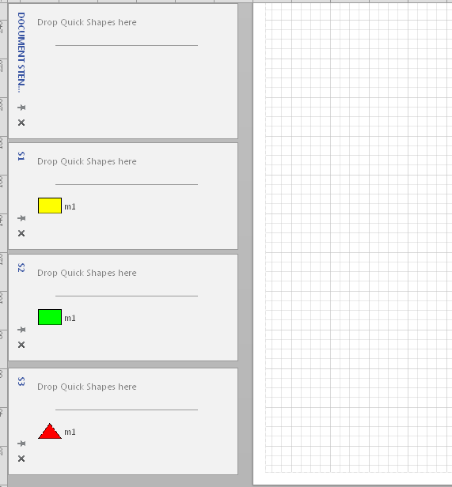
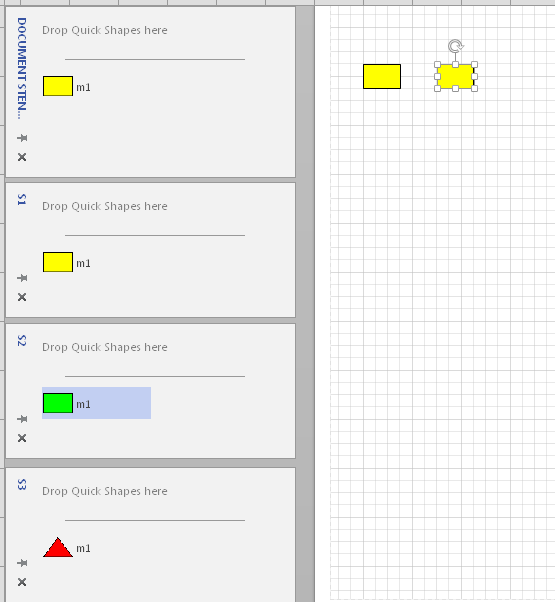
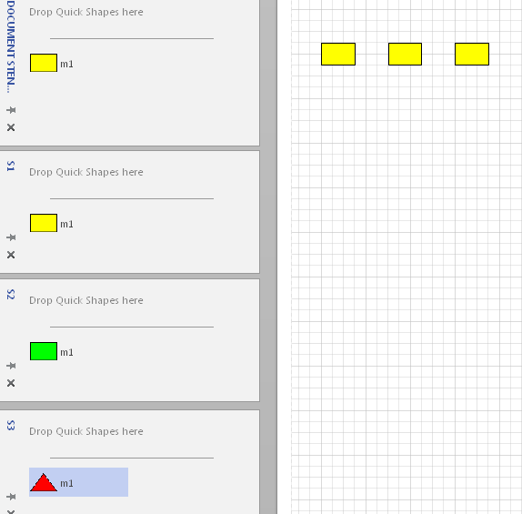
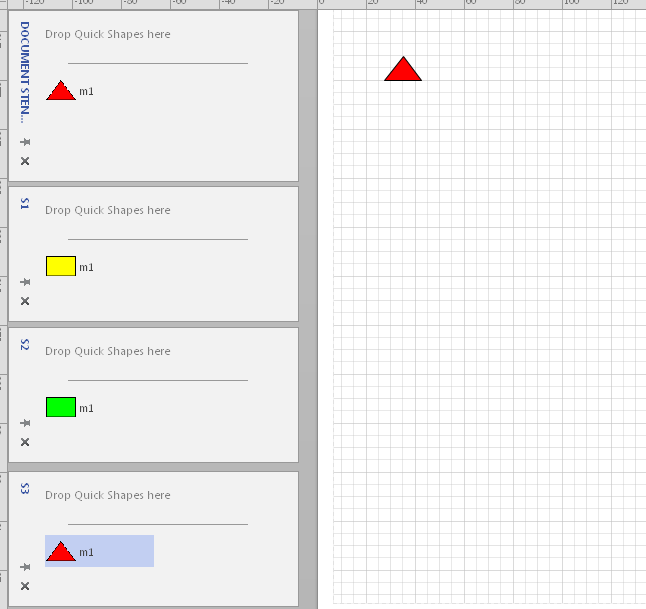
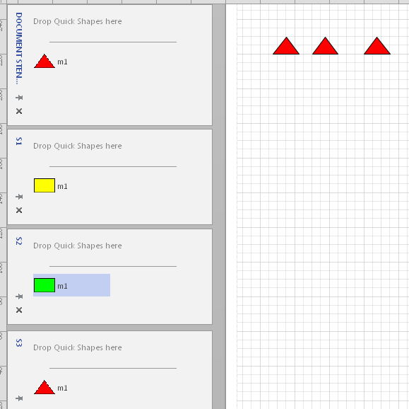
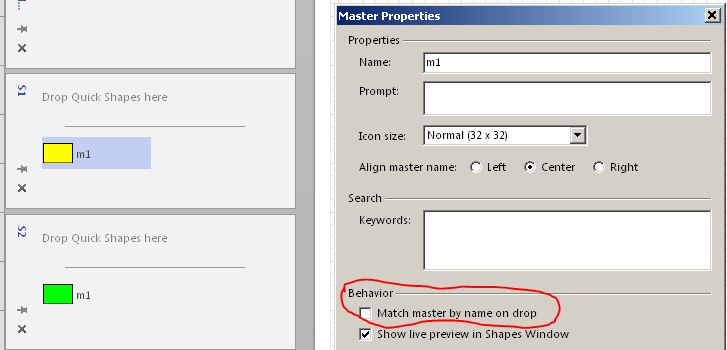
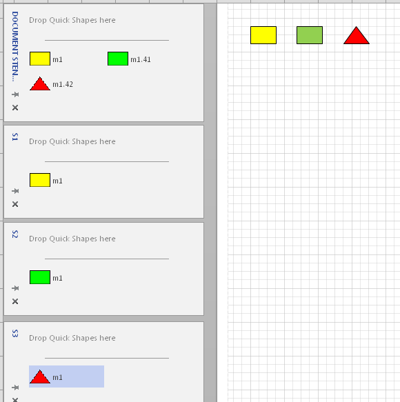
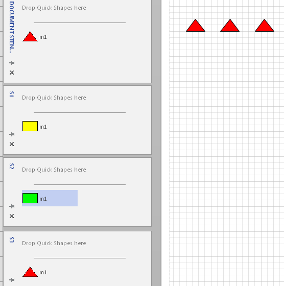

Недавно в форуме задали вопрос - что делает эта галочка. Справка высказывается по этому поводу довольно невнятно, поэтому я решил нарисовать для пояснения несколько примеров. Все-таки картинки бывают понятнее, чем слова.
Начнем с того, что главным словом здесь будет "наследование". В данном случае наследование шейпом свойств мастер-шейпа при перетаскивании его на страницу рисунка. Причем рассматривается конфликт при наследовании. Ведь мы обычно ожидаем, что при перетаскивании мастер-шейпа на страницу мы получим его копию. То есть копия должны унаследовать все свойства мастер-шейпа. В простейшем случае это так и есть. Но при наличии нескольких похожих мастер-шейпов реакция может оказаться неожиданной.
Исходное состояние перед экспериментами. Имеется пустой документ и три внешних трафарета S1.vss, S2.vss и S3.vss. Трафарет документа (Document Stencil) тоже открыт, он понадобится для наблюдения.

Все три трафарета содержат только по одному шейпу. Они и получены путем копирования с последующим небольшим изменением. То есть делаем вид, что трафарет несколько раз редактировался, и теперь встретились различные версии. Важно, что имя мастер-шейпа во всех трех трафаретах одинаковое - m1.
Теперь перетащим m1 из трафарета S1 на страницу.

Вполне ожидаемо, новый шейп похож на мастер-шейп из трафарета. И его копия появляется в трафарете документа.
Смотрим свойства мастер-шейпа m1 в трафарете документа. Галочка Match master by name on drop установлена. Можно было бы посмотреть это свойство прямо в исходном внешнем трафарете, но это дольше. Пока трафарет не находится в режиме редактирования, свойства мастер-шейпа не доступны для просмотра. А трафарет документа всегда в режиме редактирования.
В остальных внешних трафаретах галочка в начале опыта находится в таком же состоянии.
Переходим к активным действиям. Перетаскиваем мастер-шейп m1 из трафарета S2 на страницу рисунка.

Вот и первый конфликт!
Перетаскивали зеленый шейп, а на странице получили желтый. Новичка такое поведение может даже слегка напугать. Причина как раз в установленной галочке, которая заставляет Visio сверять новые копии с имеющимися в случае совпадения имен мастер-шейпов.
Главным здесь является тот m1, который появился в трафарете документа. Он командует.
Так как в трафарете S1 галочка была установлена, она переползла и в трафарет документа. И теперь этот мастер-шейп начинает навязывать свое форматирование всем мастер-шейпам с таким же именем. Если мы перетащим на страницу рисунка треугольник из трафарета S3, то тоже получим желтый прямоугольник.

Сменим начальника. Удалим все три копии на странице рисунка и мастер m1 в трафарете документа. А теперь первым перебросим m1 из из трафарета S3.

Так как первым в трафарет документа попал треугольник, уже он становится начальником и начинает давить другие копии. Поэтому при перебрасывании мастеров из S1 и S2 тоже получим треугольники.

Раз с поведением при установленной галочке определились, начинаем исследовать альтернативное поведение. Ставим трафарет S1 на редактирование, снимаем галочку и сохраняем трафарет. Остальные два не трогаем.

Удаляем все со страницы рисунка и из трафарета документа. А потом копируем по очереди m1 из трафаретов S1, S2 и S3.

Поведение резко изменяется. На странице рисунка появляются три разных шейпа, а в трафарете документа три мастер-шейпа. Один из них так и называется m1, а остальные получают в имени добавочные порядковые номера.
Объяснение - первым попал шейп без галочки, значит командира нет и остальные похожие мастер-шейпы копируются в своем исходном виде.
А теперь опять почистим страницу и трафарет документа и копируем мастер-шейпы из трех трафаретов в обратном порядке. Сначала из S3.

Ситуация опять меняется. Первым скопирован m1 из S3, а у него мы галочку не снимали. Следовательно, он первым попадает в трафарет документа и начинает давить своей галочкой на все последующие поступления. Включая m1 из S1, хоть его галочка и снята.
Последнее обстоятельство усваивается пользователями далеко не сразу и может стать причиной ошибок при недостаточно строгом отношении к этому элементу управления.
Надеюсь, кому-нибудь эта статья поможет сэкономить время при разборе необычных ситуаций.